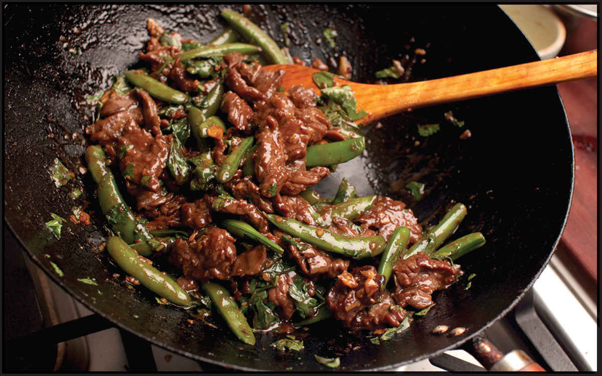
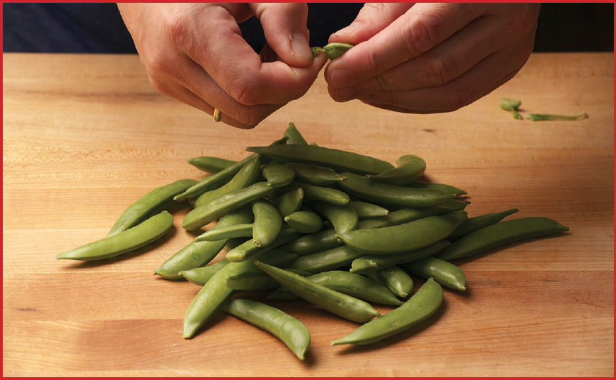
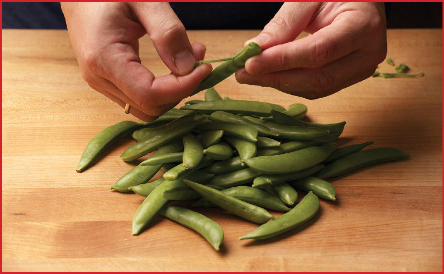
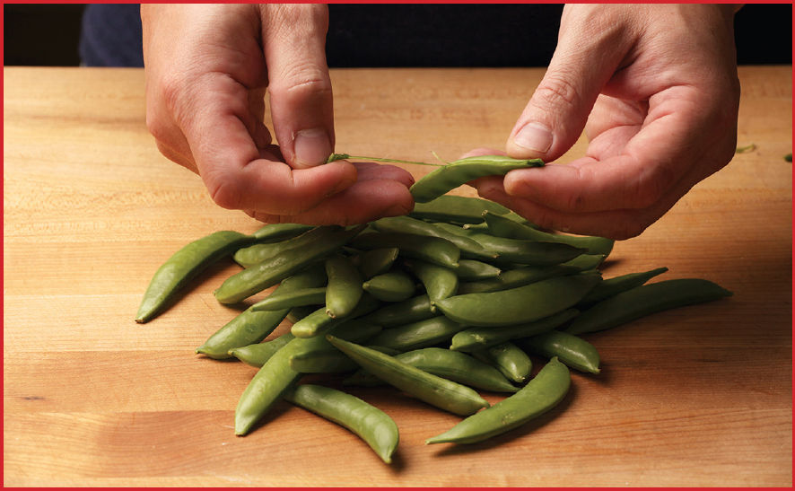

GINGER BEEF (WITH OR WITHOUT SNOW PEAS)
|
Yield Serves 4 Active Time 15 minutes Total Time 30 minutes |
The snow peas can be omitted or replaced with any other crunchy green vegetable such as snap peas, asparagus, or green beans. For best results, look for young, thin-skinned ginger that is juicy and fresh. Older, stringy ginger with tough skins will not work as well. |
This is another recipe based on a classic from the Joyce Chen book that my father made frequently while I was growing up (he still makes it). I distinctly remember that when my mother got a Braun handheld immersion blender with a mini-chopper, my parents christened it by trying to mince some old, dry ginger. It didn’t work particularly well. Instead of mince, the ginger ended up as a pulpy, stringy mess. At least the meal came with its own dental floss.
The key here is to use tender, young ginger, which is thankfully easier to find now than it was back then (look for smooth, taut skins when shopping). Joyce’s recipe calls for cilantro, but I also like to make it with basil. You can serve it Chinese style with some vegetables prepared separately on the side, or, for a quick one-wok meal, add some green vegetables. Snow peas are great.
INGREDIENTS
For the Beef:
1 pound (450 g) beef skirt, flank, hanger, or flap, sliced for stir-fries
½ teaspoon (2 g) baking soda
½ teaspoon (1.5 g) kosher salt
1 teaspoon (5 ml) light soy sauce or shoyu
1 teaspoon (5 ml) Shaoxing wine or dry sherry
½ teaspoon (2 g) sugar
½ teaspoon (1.5 g) cornstarch
For the Sauce:
1 tablespoon (15 ml) dark soy sauce
1 tablespoon (15 ml) light soy sauce
2 tablespoons (30 ml) Shaoxing wine
2 teaspoons (4 g) sugar
Small pinch of freshly ground white pepper (optional)
Small pinch of MSG (optional)
For the Cornstarch Slurry:
2 teaspoons (6 g) cornstarch
1 tablespoon (15 ml) water
For the Snow Peas (optional; see Note):
8 ounces (225 g) snow peas or snap peas, strings and ends removed
For the Stir-Fry:
¼ cup (60 ml) peanut, rice bran, or other neutral oil
2 ounces (55 g) fresh young ginger, peeled and minced in a food processor or by hand (about 6 tablespoons; see Notes)
2 ounces fresh cilantro or basil leaves (about 2 packed cups), very roughly chopped
DIRECTIONS
1For the Beef: Place the beef in a medium bowl, cover with cold water, and vigorously agitate it. Drain through a fine-mesh strainer set in the sink and press on the beef with your hands to remove excess water. Return the beef to the bowl, add the baking soda, and vigorously massage the baking soda into the meat, lifting the meat, throwing it down, and squeezing it for 30 to 60 seconds. Add the salt, soy sauce, wine, sugar, and cornstarch, roughly work the marinade into the meat for at least 30 seconds. Set aside to marinate for at least 15 minutes and up to overnight.
2For the Sauce: Combine the soy sauces, wine, sugar, white pepper, and MSG in a small bowl and stir together until homogenous. Set aside. Combine the cornstarch and water in a separate small bowl and stir with a fork until the cornstarch is dissolved.

3For the Snow Peas (optional step, see Note): Bring 1 quart of lightly salted water to a boil in your wok. Add the snow peas, stir well, cover, and boil, shaking the pan occasionally, until the peas are bright green but still quite firm, about 1 minute. Drain and spread into a single layer on a sheet tray or large plate.
4BEFORE YOU STIR-FRY, GET YOUR BOWLS READY:
5For the Stir-Fry: Heat a wok over high heat until lightly smoking. Add 1 tablespoon (15 ml) of the oil and swirl to coat. Add half of the beef and stir-fry until no longer red, about 45 seconds. Transfer to a large bowl. Wipe out the wok and repeat with another tablespoon (15 ml) of oil and the remaining beef. (You may need a quick rinse under the sink if any excess beef marinade threatens to burn on the wok.)
6Wipe out the wok and return it to high heat until lightly smoking. Add 1 tablespoon (15 ml) of the remaining oil and swirl to coat. Add the snow peas (if using) and stir-fry until tender-crisp, about 30 seconds. Transfer to the bowl with the beef.
7Wipe out the wok and return it to high heat until lightly smoking. Add the remaining tablespoon (15 ml) oil and swirl to coat. Add the ginger and stir-fry until very fragrant, about 15 seconds. Return all the beef and snow peas to the wok and stir-fry to combine.
8Stir the sauce and add to the wok by pouring it around the edges. Stir the cornstarch slurry and add a splash. Cook, tossing, until the sauce thickens and the beef is cooked through, about 30 seconds longer. Adjust the sauce consistency with more cornstarch slurry if it is too thin or a splash of water if it is too thick. Add the cilantro or basil leaves and toss to combine. Transfer to a serving platter and serve immediately with steamed rice.
How to Trim Snap Peas and Snow Peas
Sweet snap peas and crunchy snow peas are two of my favorite green vegetables to add to stir-fries, and they’re easy to prep. All you’ve got to do is remove the fibrous tips and strings. Once cleaned, store snap peas or snow peas in a zipper-lock bag or a sealed reusable container with a damp paper towel in the refrigerator. They should keep fresh for several days, though farm-fresh peas will lose sweetness rather dramatically with any storage.
Step 1 • Pinch Off the Stem End

Use your fingers to pinch off the stem end, bending it backward toward one of the seams of the pod.
Step 2 • Pull the String

Pull the pinched bit downward, taking along the string that’s attached to it. If no string comes along with it, you’re all good—it just means the string is already tender enough to eat.
Step 3 • Repeat on the Other End

Pinch off the flower end by bending it toward the seam that you have not cleaned yet. Pull it downward to take the string along with it.